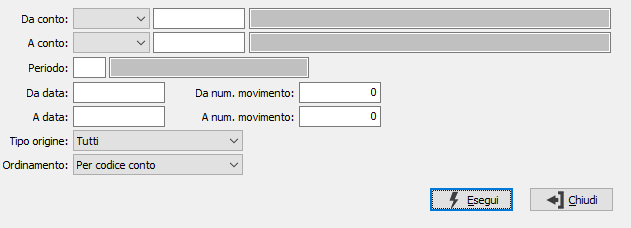

Lista movimenti di rettifica
Il programma è disponibile solo nella versione Enterprise che ne prevede la gestione.
Il programma effettua la stampa dei movimenti di rettifica esistenti, ordinata per sottoconto. Effettuata la scelta, compare la seguente maschera video:

DA TIPO CONTO/A TIPO CONTO: Indica la tipologia dei conti utilizzati come limiti: sottoconti, clienti o fornitori. Anche se lasciati vuoti, saranno valorizzati automaticamente al momento della conferma del rispettivo codice del conto.
DA SOTTOCONTO: codice del sottoconto, presente in Anagrafica Sottoconti, da cui si desidera iniziare la stampa. Confermando a vuoto, la selezione inizia con il primo sottoconto valido. Sul campo è attivo lo zoom F9.
A SOTTOCONTO: codice del sottoconto, presente in Anagrafica Sottoconti, con cui si desidera concludere la stampa. Confermando a vuoto, la selezione termina con l’ultimo sottoconto valido. Sul campo è attivo lo zoom F9.
PERIODO: inserire il periodo per cui si desidera stampare i movimenti di rettifica, l'inserimento del periodo determina la valorizzazione delle date di elaborazione. Sul campo sono attive le funzioni di ricerca (F9) sulla tabella stessa.
DA DATA: Indicare l’eventuale data da cui si desidera iniziare la stampa dei movimenti contabili relativi ai sottoconti indicati. Confermando a vuoto, l’analisi termina con l’ultimo movimento valido dell'esercizio corrente.
A DATA: Indicare l’eventuale data a cui si desidera terminare la visualizzazione dei movimenti contabili relativi al sottoconto indicato. Confermando a vuoto, l’analisi termina con l’ultimo movimento valido dell'esercizio corrente.
DA NUM. MOVIMENTO: Indicare l’eventuale numero di movimento da cui si vuole iniziare la stampa. Confermando a vuoto, la stampa inizia dal primo movimento valido.
A NUM. MOVIMENTO: Indicare l’eventuale numero di movimento con cui si vuole terminare la stampa. Confermando a vuoto, la stampa termina con l’ultimo movimento valido.
TIPO ORIGINE: consente di specificare l'origine dei movimenti che devono essere stampati; con l'opzione Tutti non sarà considerata l'origine come filtro, altrimenti è possibile scegliere:
Manuale
Simulazione ammortamenti
Generazione rettifiche
Generazione rimanenze
Fatture da ricevere
Fatture da emettere
ORDINAMENTO: specifica il criterio di ordinamento dei movimenti in stampa: per codice conto, per data o per numero di registrazione.